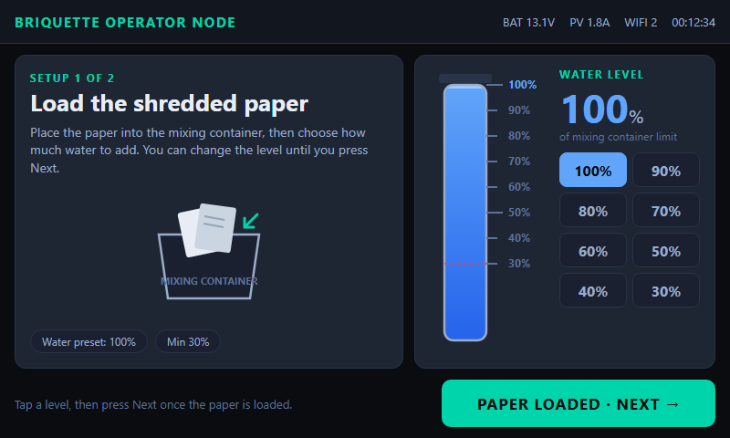
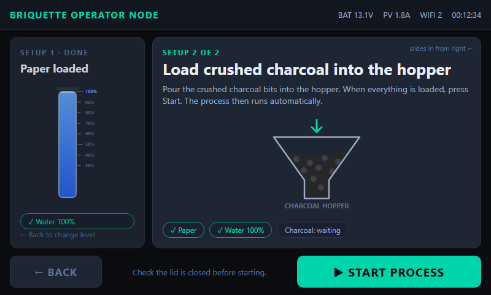
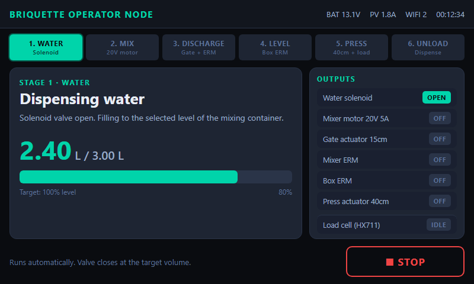
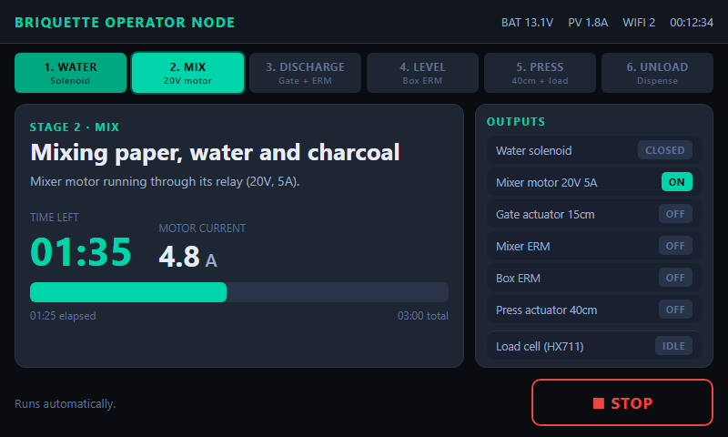
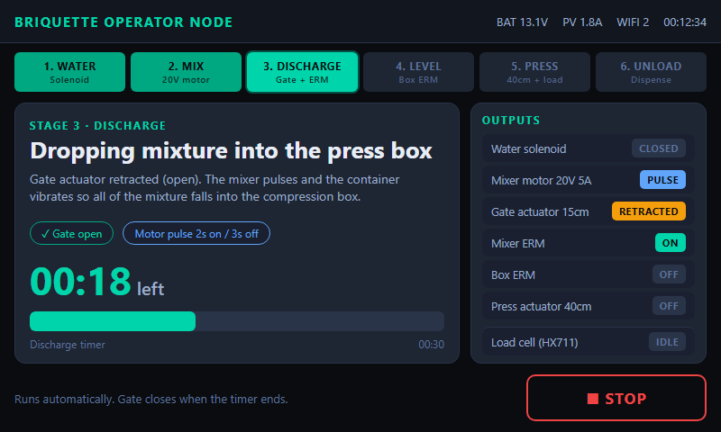
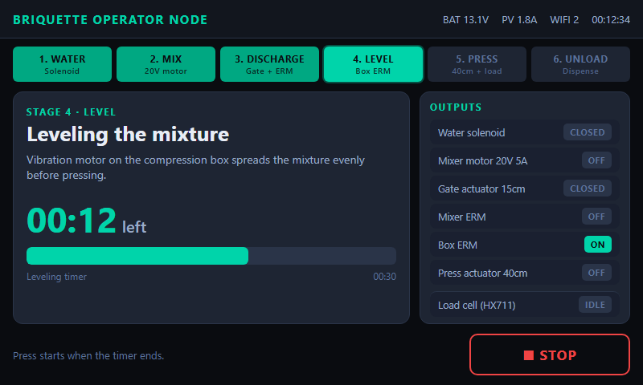
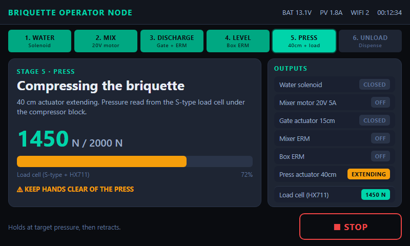
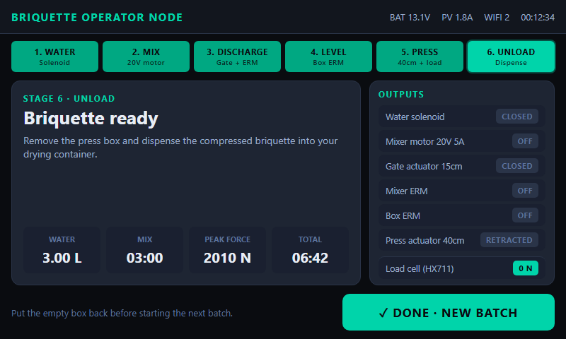
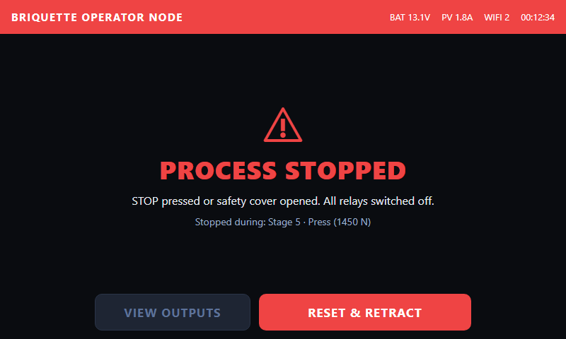

NEXTION 7" HMI · BATCH FLOW (800×480)
Setup (operator) → automatic process → unload. STOP is available on every running stage.

1. Setup: load paper, choose water level (preset 100%)

2. Setup: paper card slides left, load charcoal, START

3. Water: solenoid dispenses to selected level

4. Mix: 20V 5A motor via relay, timed

5. Discharge: gate actuator retracts, motor pulses, mixer ERM

6. Level: box ERM levels mixture, timed

7. Press: 40cm actuator extends, S-type load cell force

8. Unload: dispense briquette into drying container

Stop / fault: all relays off, reset and retract